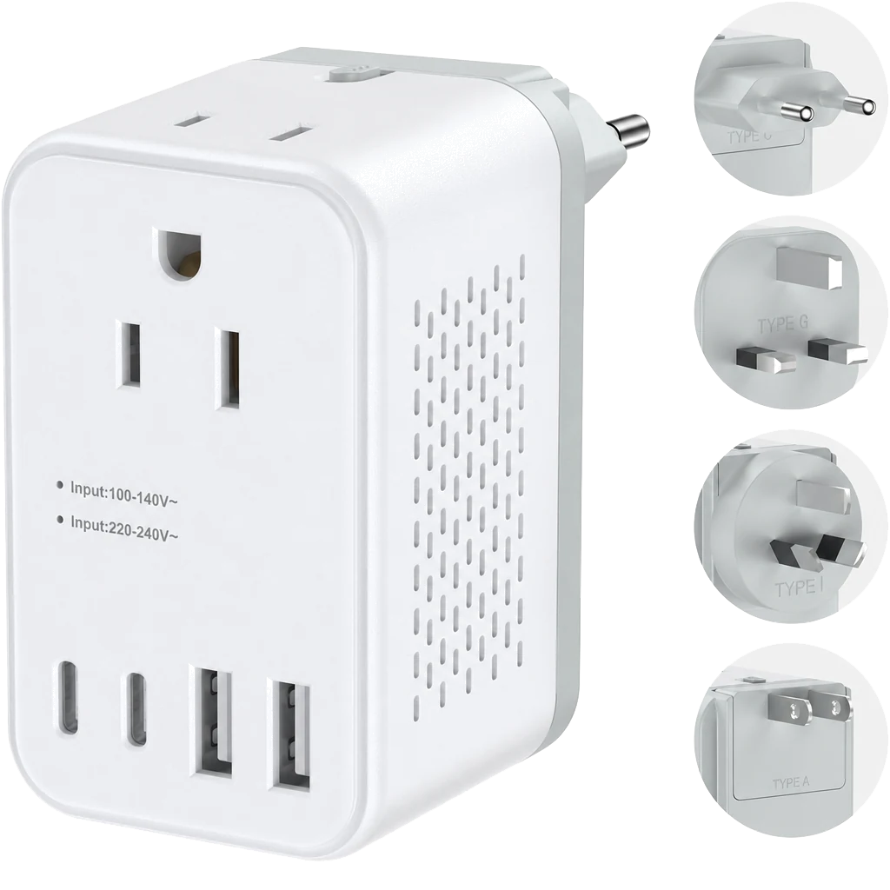

Interchangeable-plug step-down converter. Designed for US / EU / DE / AU B2B and private-label programs.

| Category | Voltage Converters |
| AC Power | 2000W |
| AC Input: | 100VAC-250VAC, 50/60Hz |
| Maxpower: | 100V-880W/250V-2000W |
| Total Output: | Step-down mode: (220-100v) (2000W) |
| Single USB-A Output: | 5V/2.4A MAX |
| Single USB-C Output: | 5.0V/3.0A MAX |
| Total Output: | 17W |
| Plug Type | EU / DE / AU / US / Other plug options |
| Size / Weight | 52 × 92 × 56mm/168g |
| Material | PC + Copper |
| Color | Black / White / Custom |
| MOQ | 1000 |
| Certification / Reports | FCC / CE / RoHS / UL Test Report |
| Patent | Patent approval pending |
| Customization | Logo / Color / Packaging, MOQ 1,000 |
| Packaging | 44.5 × 29.5 × 26.0CM, 100pcs/carton |
| Target Market | US / JP |
Logo, color, packaging and supported model-specific configurations are available for qualified OEM / ODM projects.
Discuss Your Project